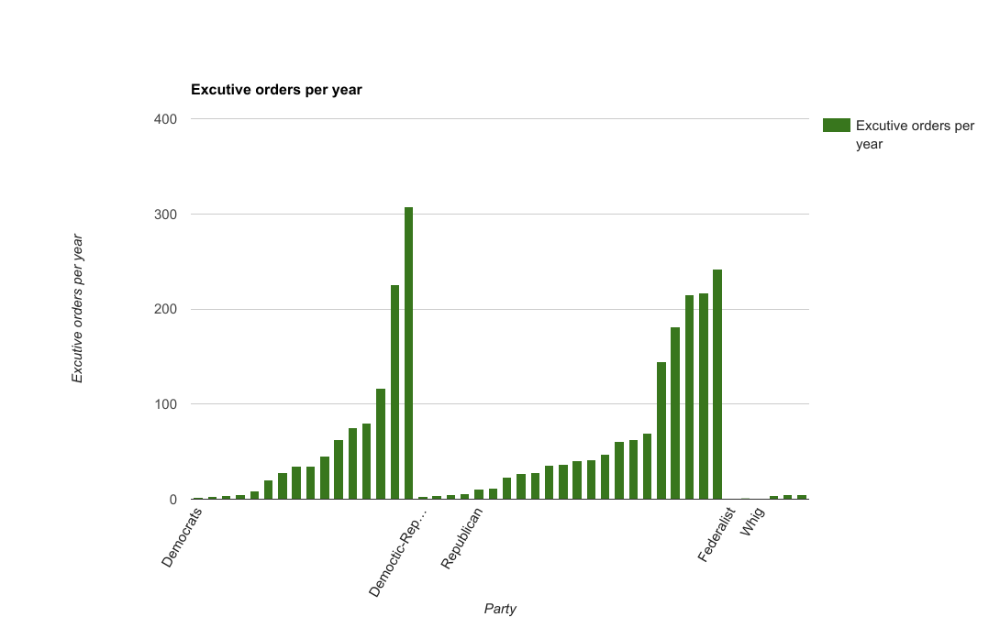

The way we collected our data was from a site called Tuva labs.
We basically looked at two different data sets, which contained all of the data that we ended up needing for this project.
We analysed the data by first organising it from the charts on tuva labs into our own charts from google sheets.
We then looked at the connections between the different attributes of the presidents and compared them if there was any sort of connection.
After analyzing connections between attributes such as executive orders, avocation, party, and years served in office, we determined that there is a connection between avocation and years served and between party and number of executive orders.
For example, Lawyers and public officials have an easier time getting elected and keeping office for eight years.
Also, Republicans have a lot more executive orders on average than all others.
Here is an image of the Executive orders per year compared to the party of the president
Here is an image comparing diffrent parties of the presidents
.png)
Here is and image of the avocation of the presidents and the years that they served
.png)